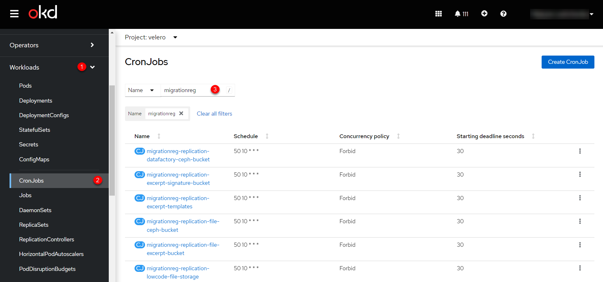
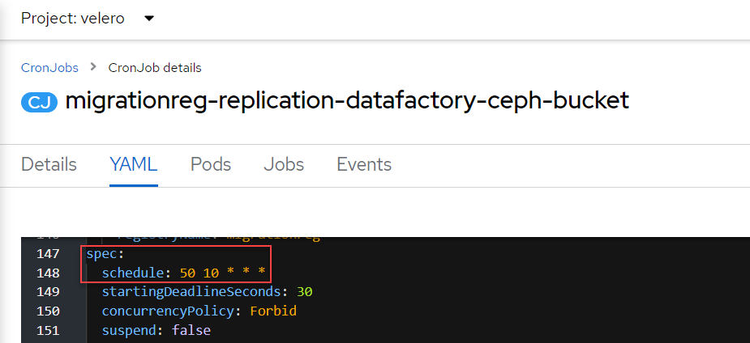
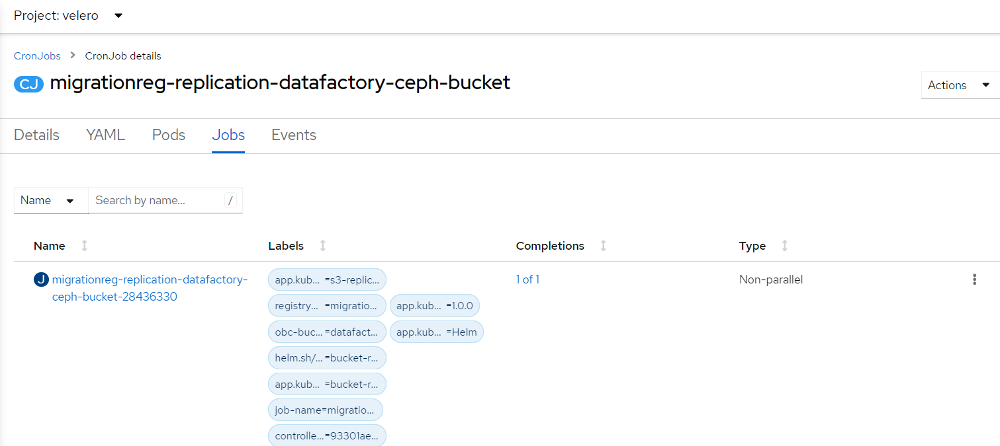
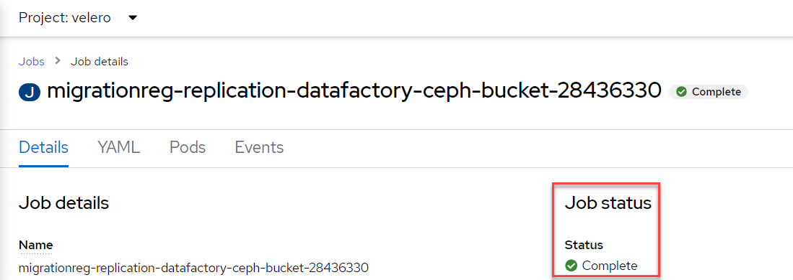

Migrating registries
| 🌠This document is available in both English and Ukrainian. Use the language toggle in the top right corner to switch between versions. |
This page provides practical guidance on migration between OKD clusters A and B.
1. Notations and abbreviations
-
Cluster A—the cluster where the existing registry is deployed.
-
Cluster B—the cluster to which the existing registry will be migrated (target cluster).
| Registry migration is carried out from the latest backup of the existing registry and, according to the instructions, will be transferred from cluster A to cluster B and restored on this cluster. |
2. Prerequisites for migration
Following these recommendations will ensure a smooth migration process without unnecessary delays and inconvenience for users. |
-
The migration process involves running a bash script that transfers data from clusters A to B. This script must be executed on a Linux platform with an
x86-64(also known asAMD64, Intel 64, orx64) microprocessor architecture for successful migration. -
The user transferring the registry to another cluster should be added as an administrator of the Platform on both clusters through
control-plane-console.See more details—Creating a platform administrator. -
On the cluster to which the registry is being migrated, the platform version should be deployed, where the
control-plane-gerritversion matches the registry version (for example, platform version —1.9.4.11, registry version —1.9.4.7,control-plane-gerritversion –1.9.4.7). This version can be verified by a branch in thecluster-mgmtrepository in the central Gerrit. If the branch with the registry version exists, then the registry version can be migrated to cluster B. If not, there are two paths:-
Update the Platform on cluster B to match the registry version.
-
Update the registry on cluster A to a version already on cluster B.
-
-
Simultaneous access to both cluster A and cluster B.
-
Availability of the following commands in the Terminal:
-
oc -
velero -
rclone -
vault
-
-
Stable internet connection. The more significant the bandwidth, the faster the migration will be. Otherwise, a jumpbox (with access to both clusters) in AWS or another cloud provider can be used. Using a jumpbox will reduce the time of transferring the backup from one cluster to another.
If using a jumpbox, verify access to platform Minio/Vault from the jumpbox IP address. To get the IP of the jumpbox, execute the following command:
ssh sshmyip.com
Then verify or add the jumpbox IP address to the list of allowed CIDRs at the platform management level for both cluster A and cluster B ( see more on the page CIDR: Restricting access to Platform and registry components).
If there’s no access to the control-plane-console, contact the L2 team to check access.
For registry migration, it’s crucial that there are no registry-related resources on cluster B before starting the migration.
If the registry did not previously exist on this cluster, further actions are unnecessary.
- If the registry existed, check/delete the following to remove all resources:
-
-
Delete the registry through the Control Plane administrative panel interface.
More details can be found on the page Deleting a registry. -
Confirm changes and wait for the registry to be deleted.
-
After deletion, check for the absence of the project in the central Gerrit component.
-
Go to Gerrit (Openshift console > Projects >
control-plane> Networking > Routes >control-plane-gerrit). -
Authenticate through openshift-sso, open the Browse menu > Repositories and search by the registry name.
-
If the search finds the repository, then go to Openshift-console > Projects >
control-plane> Home > API Explorer > in the search (Filter by kind …) findgerritproject><registry name>> Actions >Delete GerritProject. -
After deleting the Gerrit project, go to the Gerrit console and check that the repository is absent. If the repository exists, delete it through the Gerrit console (open the registry repository > Commands > Delete project).
-
-
Delete the directory in Minio.
-
To check the created directories in Minio, go to MinioUI (for vSphere clusters this Route can be found in OpenShift-console > Projects >
control-plane> Networking > Routes >platform-minio-ui. -
If there is no Route, go to the secrets at:
Openshift-console > Project >control-plane> Workloads > Secrets >backup-credentials, copy thebackup-s3-like-storage-urlfield and add the port to the URL (For example,https://endpoint.com:9001).Authentication data in Minio is located in Openshift-console > Project > control-plane> Secrets >backup-credentials, whereusernameis the fieldbackup-s3-like-storage-access-key-id, andpasswordisbackup-s3-like-storage-secret-access-key. -
After authentication, check/delete the directories related to the registry in the bucket. These include:
-
openshift-backups/backups/<registry-name>*;
-
openshift-backups/restic/<registry-name>;
-
obc-backups/<registry name>.
-
-
-
3. Preparing the registry for migration
| Before beginning the migration, it is essential to restrict end-user access to this registry completely. |
-
Create a backup of the registry on cluster A.
Before transferring the registry to a new cluster, initiate the Jenkins process
Create-registry-backup-<registry name>.If the Jenkins pipeline completes with a
Successstatus, the backup has been successfully created.To obtain the backup name, go to the logs/event journal of the last Jenkins pipeline run (Console Output) and search the page for a message like:
[INFO] Velero backup - <registry name>-<timestamp> done with Completed status
For example:
[INFO] Velero backup - abc-02-2023-04-18-19-03-14 done with Completed status
-
where
abc-02-2023-04-18-19-03-14is the backup name.
For registry versions < 1.9.3, execute the following command in Terminal:
velero backup describe <backup name>
Find the backup name in the logs of the last run of the Jenkins process
Create-registry-backup-<registry name>.For more information on creating backups and restoring registries, see Backing up and restoring.
-
-
You can proceed if the last velero backup is finished with a
Completedstatus. If the velero backup status is different fromCompleted, involve L2-L3 technical support specialists to check the operability of the Jenkins pipeline. -
Obtain consistent data in backups of the migrating registry buckets.
Get the latest backups of S3 buckets in the
veleroproject. Open the Workloads section, then go to CronJobs. Use the search panel here to filter buckets by the registry name, for example,migrationreg.Figure 1. CronJobs-
Open each CronJob and change its start time to the nearest possible. For example, set it to run in the next 10-15 minutes. To do this, go to the settings of each CronJob, open its YAML configuration, and change the
spec.scheduleparameter. For instance, to run a CronJob daily at 10:50 UTC, use the following configuration:CronJob details. YAML Configurationspec: schedule: 50 10 * * *When working with
cron, the time is set in UTC.Figure 2. CronJob details. Schedule -
After this, wait for all the CronJobs to start and complete. You can check the progress and status in the Jobs section by selecting the relevant Job and viewing the Status section, where a
✅ Completemark should be present.Figure 3. CronJob details. JobsFigure 4. Job details. Status -
By following these steps, you will obtain consistent data from the backups of registry buckets in the migration process.
-
-
Prohibit changes to the registry through Jenkins pipelines.
In each pipeline for the registry, go to the Configure section and find the
Disable this projectoption under the Build Triggers section, check the box next to it, and save the changes using theSavebutton.
4. Migrating the backup from cluster A to cluster B
-
Obtain the login commands for both clusters.
For this, log in to the Openshift console and in the top right corner, by clicking on your username, go to
Copy login command, copy the access token in theLog in with tokenfield, and save it in a text editor.Repeat this operation for both clusters: A and B. -
Obtain the name of the latest backup created on cluster A (for example,
abc-02-2023-04-18-19-03-14). -
Open the terminal and execute the following commands:
Export login for Cluster Aexport A_CLUSTER_LOGIN="oc login --token …"
Insert between the quotes
"…"after--tokenthe login command obtained in step 1 for Cluster A. There should be no line break at the end of the login command.Export login for Cluster Bexport B_CLUSTER_LOGIN="oc login --token …"
Insert between the quotes
"…"after--tokenthe login command obtained in step 1 for Cluster B. There should be no line break at the end of the login command.Export Registry Nameexport REGISTRY_NAME="abc-02"
abc-02is the registry nameExport Backup Nameexport BACKUP_NAME="<backup name>"
Example of a backup name: abc-02-2023-04-18-19-03-14.If the registry was previously migrated to Cluster A rather than deployed on this Platform, execute an additional
export:export VAULT_KEY="<key name>"-
where
<key name>is the key for the unseal process, which can be found in the Openshift console (Cluster A) > Projects ><registry name>> ConfigMaps >hashicorp-vault-config. The field key_name is the key name.For example:
key_name = "autounseal-migration"
In the case of migrating an extensive registry, perform the export of the following variable:
export LARGE_DATA="true" -
-
Download and unzip the archive with the command:
unzip registry-migration.zip -d registry-migration
Navigate to the registry-migration directory (
cd) and execute the command:chmod +x migration.sh && ./migration.sh
-
After executing the script, log in to the terminal using oc cli on Cluster B and verify the following:
-
The presence of velero backup on Cluster B.
-
The presence of directories named keycloak-export in the folder where the script is located.
-
5. Preparing for restoration on cluster B
-
Create the registry through
control-plane-console.-
Create a registry with the same name and version on Cluster B. When creating the registry, assign all administrators who were in the registry on Cluster A and provide up-to-date data.
- Registry key data
-
Fill in the fields either with the current keys for this registry or use test keys. After the migration, the key data can be updated through the Control Plane console. For key data, refer to L2-L3 support.
For more information on updating registry keys, see Updating registry digital signature keys and certificates.
- Registry template
-
Choose the same template as the one used for this registry on Cluster A. To obtain the template name, go to the Openshift console > Projects >
control-plane> API Explorer > In the search definecodebase> Go tocodebase> Instances > Opencodebase <registry name>> Check the following settings:Example 1. codebase.yamlmetadata: annotations: registry-parameters/template-name: templates/registry-tenant-template-minimal-
where
templates/registry-tenant-template-minimalis the registry deployment template name.
-
If the console functionality allows adding DNS for Keycloak or portals, skip this step, as traffic is still configured to Cluster A). -
After creation, immediately go to Jenkins (namespace
control-plane> Networking > Routes >jenkins), and stop the first buildMASTER-Build-<registry name>.Wait for the creation of the directory <registry name>and the Jenkins pipeline. After starting, immediately do an Abort of the build.
-
-
While still in the Jenkins console, change the configuration of MASTER-Build-
<registry name>:
Go to MASTER-Build-<registry name>> Configure, and in the Build Triggers section, check the box for Disable this project. Then save the changes with theSavebutton. -
Transfer the values.yaml and values.gotmpl configuration files from the registry repository of Cluster A to Cluster B.
-
Go to the registry repository on Cluster A:
Open Control-plane-console > Dashboard > Gerrit > Browse > Repositories > select the repository<registry name>.
In the registry repository, go to Branches >master, then to deploy-templates and open the values.yaml ( values.gotmpl ) file > Copy the raw code to the clipboard. -
Then go to the registry repository on Cluster B:
Control-plane-console > Dashboard > Gerrit ) > Browse > Repositories and select the repository<registry name>. Through commands >Create change, create a change with the following parameters:-
Select branch for new change: master. -
Description: Update registry before migration.After creating the change, in the change itself click
Edit>ADD/OPEN/UPLOAD— find the values.yaml (values.gotmpl) file. Transfer the copied values.yaml (values.gotmpl) configuration from Cluster A to this file.
-
-
Repeat the operation for both files: values.yaml and values.gotmpl.
-
Save the changes, wait for the Code Review pipeline to pass (CI Jenkins
+1), setCode-review +2, and merge the changes to themasterbranch with theSubmitbutton.
-
6. Restoring the registry on cluster B
| Enable access for end users to the registry ONLY after the registry restoration process is complete. |
-
Open Jenkins (namespace
control-plane> Networking > Routes >jenkins), navigate to the folder with the registry name and start the Jenkins pipelineRestore-registry-<registry name>. After launching the pipeline, select the version (at thecleanup-registry-before-restorestage) and wait for the process to complete.The process may finish with a UNSTABLEstatus. This is related to the configuration change of the pipeline MASTER-Build-<registry-name>, where<registry-name>is the name of the registry.If the process finishes with an error or takes more than 1-2 hours, contact L2-L3 technical support specialists. -
After the pipeline completes, go to the Openshift console → Projects →
<registry-name>, and ensure that there are no pods in error states and all pods are inRunning/Completedstatus.If a pod named
bpms-* is not started and has an error status, correct the passwords inpostgresforoperational-instanceandanalytical-instancepods. For this, you need to:-
Go to Openshift console > Secrets, find the secret for
operational-instance—operational-pguser-postgres(foranalytical-instance— it isanalytical-pguser-postgres). -
Go to Secret and copy the
passwordfield. -
Go to Openshift console > Pods > find the
operational-instanceoranalytical-instancepod and execute the following commands sequentially:psqlALTER ROLE postgres WITH PASSWORD '<password>';-
where
<password>is thepasswordfield, copied from Secret, for the respective instance —operationaloranalytical.
-
-
After performing all operations, delete the
bpmspod and wait until it is inRunningstatus (active/started).
If the
registry-rest-apipod starts with anImagePullBackOfferror, add the IP of Cluster B to the annotation of Openshift Route > Nexus.-
For this, go to Openshift console > Project >
<registry name>> Routes > Nexus > YAML and check the following field in the .yaml configuration:Example 2. route.yamlmetadata: annotations: haproxy.router.openshift.io/ip_whitelist: <NAT Cluster IP>/32,....If the IP address of Cluster B is missing, add it to
haproxy.router.openshift.io/ip_whitelistwith a mask of/32.
-
-
Go to Jenkins and change the configuration of
MASTER-Build-<registry-name>:Go to
MASTER-Build-<registry-name>>Configure, and in theBuildTriggerssection, uncheck the box for Disable this project. Then save the changes with theSavebutton. -
Transfer the registry configuration to values.yaml/values.gotmpl.
-
Log in to control-plane-gerrit (Openshift console > Projects →
control-plane→ Networking →gerrit> Log in viaopenshift-sso).Go to Browse > Repositories in Gerrit and select the repository
<registry name>. Throughcommands>Create change, create a change with the following parameters:-
Select branch for new change: master. -
Description: Update registry after migration.After creating the change, click
Editin the change itself.
-
-
Add
vaultconfiguration to values.gotmpl.For this, take the current
vaultconfiguration from the config-maphashicorp-vault-config(Openshift console > Projects ><registry name>> Workloads > ConfigMaps >hashicorp-vault-config) and copy the field as in the following example:ui = true listener "tcp" { tls_disable = 1 address = "[::]:8200" cluster_address = "[::]:820 1" } storage "file" { path = "/vault/data" } seal "transit" { address = "https://<vault url>" disable_renewal = "false" key_name = "<key name>" mount_path = "transit/" tls_skip_verify = "true" } -
where
<vault URL>is the link tovault,<key name>is the key name (the config-map will have the current fields).Then, in the change, click
ADD/OPEN/UPLOAD; in the search, specify values.gotmpl and select the required file. In the file itself, add the configuration as in the example:vault: platformVaultToken: {{ env "platformVaultToken" }} openshiftApiUrl: {{ env "openshiftApiUrl" }} centralVaultUrl: {{ b64dec $centralVaultUrl }} server: dataStorage: storageClass: ocs-storagecluster-ceph-rbd auditStorage: storageClass: ocs-storagecluster-ceph-rbd standalone: config: | ui = true listener "tcp" { tls_disable = 1 address = "[::]:8200" cluster_address = "[::]:8201" } storage "file" { path = "/vault/data" } seal "transit" { address = "https://<vault url>" disable_renewal = "false" key_name = "<key name>" mount_path = "transit/" tls_skip_verify = "true" } -
After adding, click Save and Publish. Wait for the Jenkins Code-Review pipeline to pass (a +1 rating from edp-ci should appear), then click Reply > Code-Review - +2 > Submit
-
-
After applying the changes, the Jenkins process
MASTER-Build-<registry name>should start. Wait for the Jenkins pipelineMASTER-Build-<registry name>to complete. -
Transfer users.
In the Keycloak admin console, go to the realm (1), and in the left menu of the realm, select
Import(2). For the import, choose theSKIPstrategy, then clickSelect file(3) and select the file from the directory _keycloak-export/<realm name>-users-*.json.If there is more than one file, import all files. 
-
Correct Jenkins Credentials in the registry Jenkins.
If you do not have access, add yourself as a registry administrator through control-plane-console.
-
For this, go to Openshift console > Projects >
<registry name>> Workloads > Secrets >gerrit-control-plane-sshkeyand copy theid_rsafield. -
Then go to the registry Jenkins (Networking > Routes >
jenkins) > Manage Jenkins > Manage Credentials >edp-ci(gerrit-control-plane-sshkey) > clickUpdate. -
In the
Private Keyfield, insert the copied value usingReplace.
-
-
After updating the
Private Key, go to the folderregistry-regulationsand select the pipelineMASTER-Build-registry-regulations, then clickBuild with Parametersand select the checkbox forFULL_DEPLOYand clickBuild. Wait for it to complete with aSuccessstatus.
7. Testing the registry
-
Ensure that the User portals function as expected and that business processes have migrated successfully.
-
All Jenkins pipelines should complete with a
Successstatus.
8. Migrating registry configuration
- Transfer the registry configuration from Cluster A to Cluster B according to the documentation:
-
-
Administrators (see more on the page Creating registry administrators).
-
Key data (see more on the page Updating registry digital signature keys and certificates).
-
Mail server (see more on the page Configuring the mail server).
-
Registry resources
Transfer the settings parameters from the values.yaml file (section global.registry) of the registry on Cluster A to the settings in the values.yaml file of the registry on Cluster B. -
DNS (see more on the page Configuring custom DNS).
-
Access restrictions (see more on the page CIDR: Restricting access to Platform and registry components).
-
Service provider authentication (see more on the pages Configuring authentication for officers and Configuring self-registration for officers).
-
Service recipient authentication (see more on the page registry-develop:registry-admin/cp-auth-setup/cp-auth-setup-citizens.adoc)
-
Backup (see more on the pages Manually backing up and restoring the registry and Setting up the registry components backup schedule and retention time).
-